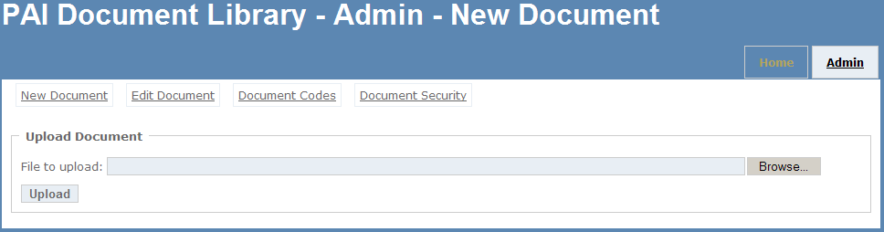
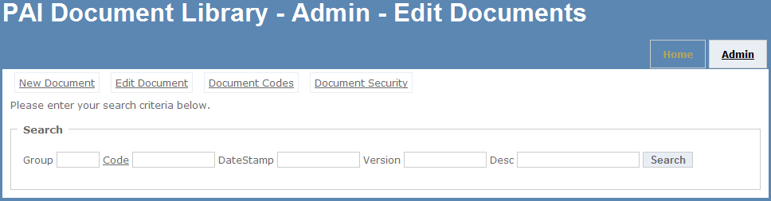
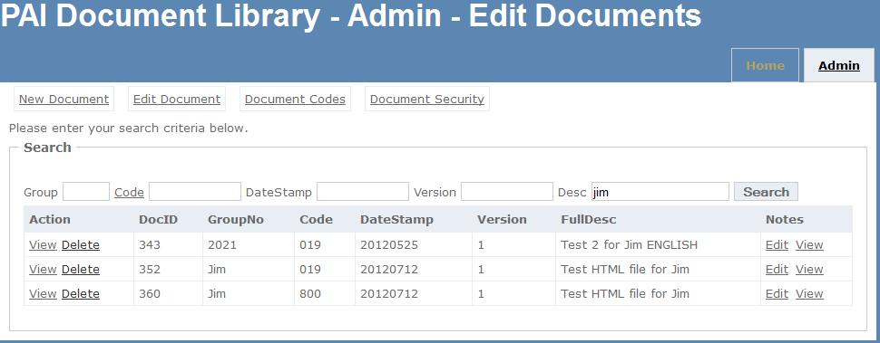
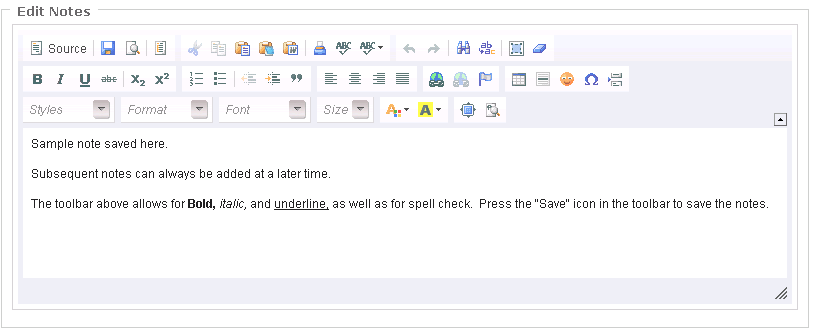
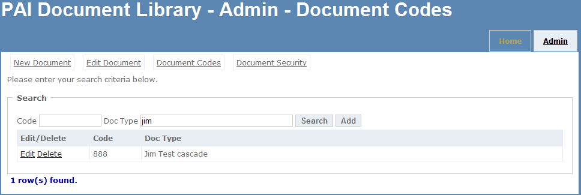
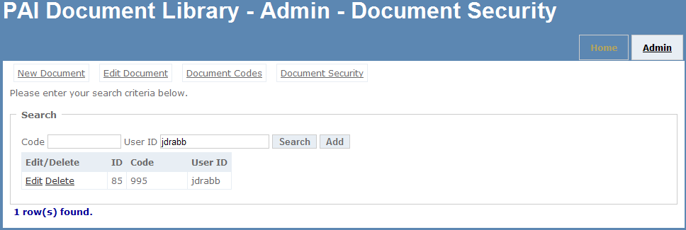

To upload documents in to the library, select the "Browse" button and locate the document. Next click the
"Upload" button. The document will be checked to be named in the proper format and that the document code
has already been created in the library database. The document format must be in the form: Group-Code-Date-Ver-Desc.

The first step is to search for the document that you want to edit. Enter in any relevant search information into
the entry boxes and click search.

If you see your document you can now click on "view" to open the document or "delete" to remove the
document from the library. You can also edit and/or view notes attached to a document that will be
viewable by users that have access to the document. The "Edit" link under the Notes column will pop-up
a window and present a rich-text editor.


From this tab you can add, edit and delete document codes. To search existing doc codes, enter a code,
document type or both and click "Search". If no search criteria is entered, all document codes will be
returned. To add a code, enter the code number and the document type description and click the "Add" button.
If your search returned records, you can click on "Edit" to change the "Doc Type" description or click
on "Delete" to remove the document code from the library. Note: a document code can only be deleted if
no documents in the library are using the code.

The document security tab allows you to add, edit and delete security for a document code. This security
defaults to "ALL" so that any user searching the library can see the document in the search results as well
as view the document. If you wish to limit the who can view a document, enter a document code and the users
network login ID and click "Add". You can enter as many users as you want, one at a time.